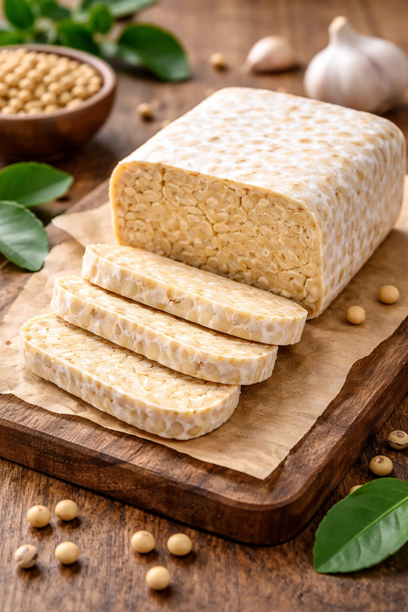

WELCOME
bioteknologi tempe
Tempe adalah makanan tradisional khas Indonesia hasil fermentasi biji kedelai menggunakan kapang Rhizopus sp. (ragi tempe), berbentuk padatan kompak berwarna putih. Sumber protein nabati yang sangat bergizi ini kaya akan serat pangan, vitamin B12, dan kalsium, serta dikenal sebagai superfood karena manfaat kesehatannya, termasuk sebagai antioksidan.
learn more
about
Tempe adalah makanan tradisional Indonesia hasil fermentasi kedelai menggunakan kapang Rhizopus sp. (ragi tempe), menghasilkan tekstur padat berwarna putih dengan aroma khas. Sebagai sumber protein nabati tinggi dan probiotik, tempe bergizi (vitamin B12, isoflavon) dan sering dijadikan pengganti daging (vegetarian).
homecara membuat
1. Timbang kacang merah dan kacang hijau seberat 100 gram
2. Lalu rendam kacang merah dan kacang hijau dalam wadah atau panci yang berbeda diamkan selama satu malam.
3. Setelah direndam satu malam, ganti air nya lalu diaduk hingga kulit ari nya terlepas.
4. Setelah bersih lalu direbus hingga kacang empuk.
5. Jika sudah empuk tiriskan sampai air tidak menetes lagi, lalu pindahkan ke wadah yang bersih dan kering, lalu diamkan sampai dingin dan kering.
6. Setelah dingin dan kering, timbang ragi seberat 1 gram dan tepung kanji seberat 2 gram untuk kacang seberat 100 gram.
7. Campurkan tepung kanji dan ragi lalu aduk sampai merata seluruhnya.
8. Masukkan kacang yang telah dicampur ragi dan tepung kanji kedalam plastik (ukuran menyesuaikan).
9. Setelah di masukkan, lubangi plastik menggunakan garpu atau jarum.
10. Jika sudah dilubangi, letakkan tempe yang sudah dibungkus di wadah yang telah disiapkan lalu tutup menggunakan kain lap.
11. Tunggu sampai tempe jadi selama kurang lebih 2 sampai 4 hari. Kemudian tempe siap untuk dikonsumsi.
my project
Kacang merah dan kacang hijau merupakan jenis kacang yang mudah ditemukan di Indonesia. Jenis kacang tersebut memiliki kandungan protein, yang cukup tinggi. Selain itu, kedua jenis kacang ini berpotensi untuk dijadikan bahan baku tempe karena memiliki karakteristik yang mendukung proses fermentasi. Pemanfaatan kacang merah dan kacang hijau sebagai bahan alternatif pembuatan tempe. Penelitian mengenai proses pembuatan tempe menggunakan kacang merah dan kacang hijau untuk mengetahui kelayakan keduanya sebagai bahan pengganti kedelai, baik dari segi proses fermentasi, kualitas produk, maupun gizinya. Dengan adanya penelitian ini diharapkan dapat memberikan informasi dan inovasi baru dalam pengembangan produk tempe berbahan baku non-kedelai
home
contact us
- WhatsApp:081959593641
- instagram: liumatthew901
- gmail:liumatthew901
- ______________________________________
- ======================================
- thank you